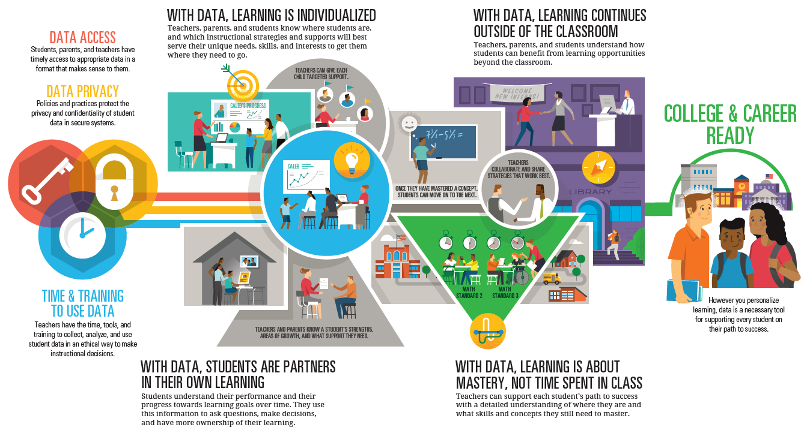

Personalized Learning - Future Education

Image retrieved from data quality campaign
Personalized learning is essential in a remote learning environment. It is an instructional approach that empowers students to learn by the method, and at the pace, that best suits their needs. Unlike active learning or blended learning, which are more prescriptive, personalized learning sees educators tailor the course experience according to specific student needs.